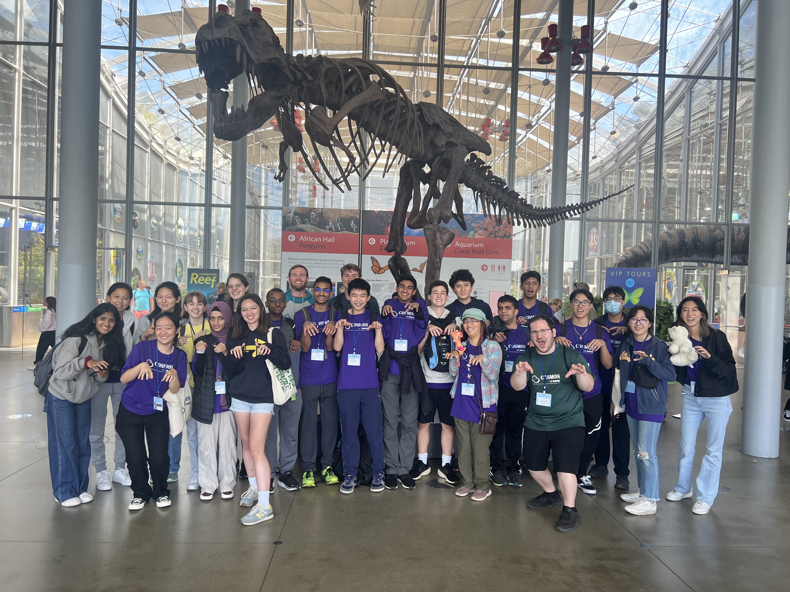

Outreach & Education
Outreach and education is a central aspect of my work. I have participated in several education and outreach experiences such as being a teaching assistant for the Department of Evolution and Ecology, being a teaching assistant for an in-residence high school program at UC Davis, and the on going development of a podcast to increase visibility of LGBTQ+ scientists.
Teaching Ecology & Evolution Courses
I have had the privilege to be a teaching assistant for two classes held through the Department of Evolution and Ecology at the University of California, Davis: an introductory ecology and evolution class (BIS2B) and an upper-division ecology class (EVE 101).
I taught several discussion sections of EVE 101 in the Fall of 2023 where I prepared activities to help students synthesize content from lecture, taught effective science communication skills through lab reports, and exposed students to areas of ecology that may have not been highlighted in lecture. At the end of the quarter, students highly rated my effectiveness as a teaching assistant (median = 5/5, mean = 4.3/5, n = 53).
In the Spring of 2024, I had the privilege of teaching BIS2B, introductory ecology and evolution. As the teaching assistant for the lab section, I helped students apply their knowledge from lecture through empirical and computational experiments. At the end of the quarter, students again highly rated my effectiveness as a teaching assistant (median = 5/5, mean = 4.8/5, n = 25).
Teaching Theoretical Biology to High School Students
In the summer of 2023 and 2024, I was a teaching assistant for the COSMOS Program at the University of California, Davis. As part of the section on "Mathematical Modeling of Biological Systems", I taught students about how to model biological processes using discrete and continuous time models, analyze models, and communicate biological and mathematical findings to both scientific and non-scientific audience.
Podcast increasing visibility of LGBTQ+ Scientists
The recruitment and retention of LGBTQ+ scientists across career levels is lower than that of non-LGBTQ+ peers. To increase recruitment of LGBTQ+ scientists, Natasha Dhamrait and I set out to create a podcast interviewing queer scientists across STEM disciplines. By showcasing the research and work of a diverse set of queer scientists, we hope to higlight the important science that members of the LGBTQ+ community contributes, provide potential role models for current and aspiring scientists, and talk about cool science! We would like to thank the Center for Population Biology at the University of California, Davis for funding this project to compensate guests on the podcast.